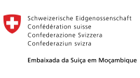

26 OUT - 18hrs
Mudança Climática e Justiça Climática: uma questão de Direitos Humanos em Moçambique
José Maria Langa – ObservA - Observatório do Ambiente - Moçambique
26 OUT - 18hrs
Mudanças climáticas e apartheid ambiental
27 OUT - 18hrs
Energias Renováveis: uma mudança de paradigma e seu potencial para Moçambique
Emmett Costel – AMER – Associação Moçambicana de Energias Renováveis- Moçambique
28 OUT - 18hrs
AI (African Intelligence) – Ilusão ou Desilusão?
Alexandre Coelho – VOID Tecnologia e Comunicação - Moçambique

28 OUT - 18hrs
Um trabalho com tempo para o mundo

29 OUT - 18hrs
Racionalidade algorítmica e subjetividades maquínicas: pensar com o Sul
Fernanda Bruno – UFRJ (Universidade Federal do Rio de janeiro) - Brasil
30 OUT - 18hrs
Homo plasticus: a condição pós-humana da génese à liberdade
30 OUT - 18hrs
Consumos de performance para gestão corporal na cidade de Maputo
Acompanhe através dos nossos canais
Cada sessão dura aproximadamente 1h e 30 min
Como desmontar a desinformação / How to combat disinformation
No contexto da digitalização da informação, este curso visa ensinar os alunos a analisar criticamente as transformações do ecossistema mediático e a utilizar as novas ferramentas de pesquisa e verificação de informação ao dispor dos jornalistas.
In the context of the digitalization of information, this webinar aims at training participants in analyzing the transformations in the media ecosystem and how to use the new tools available to journalists and other media actors to research and verify information.
Candidaturas/Applications : Até 30 de Outubro/Until 30 October
Preencha o formulário de registo/ Fill in the form
Destinado a jornalistas
Vagas/Places : Max. 10 participantes
Gratuito

Formador/ Mentor
Paulo Agostinho
editor de Lusofonia da Agência Lusa e professor de jornalismo, social media e comunicação
editor for Lusophone countries at LUSA -Portuguese News Agency and teacher of journalism, social media and communication
2 Novembro das 10h às 12h
2 November : 10am - 12pm
4 Novembro das 10h às 12h
2 November : 10am - 12pm
Organização/Organization

Oportunidades para Desenvolvimento de Projectos e Modelos de Negócio para as Energias Renováveis em Moçambique / Opportunities for the Development of Projects and Business Models for Renewable Energies in Mozambique
O Governo de Moçambique manifestou recentemente o seu empenho em apostar no sector dasEnergias Renováveis. O objectivo declarado é que o contributo das energias renováveis atinja os 20% na matriz energética nacional dentro de duas décadas. Vários projectos, envolvendo investimentos vultuosos, estão actualmente em desenvolvimento. Esta mesa-redonda tem como objectivo debater o potencial para o desenvolvimento de projectos no sector das energias renováveis e os modelos de negócio envolvidos
The Mozambican Government expressed recently its commitment in developing the renewable energiessector in the country. Its aim is that the contribution of the renewable energies component will represent 20% of the electricity produced in the country in 2040. Meanwhile, several big projects, representing a substantial investment, are already under way. This round table aims at discussing the potential for the development of projects in the renewable energies sector and the business models involved.
Formadora/ Mentor
Veerle Smet
União Europeia-Moçambique/ European Union - Mozambique
Formador/ Mentor
Emmett Costel
AMER- Associação Moçambicana de Energias Renováveis
5 Novembro das 17h30 às 19h30
5th of November : 5.30pm - 7.30pm
Organização/Organization
AMER- Associação Moçambicana de Energias Renováveis
Uma iniciativa 
Com o apoio de 